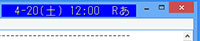

Homeへ戻る
↑ClockPod 2.x Version 2.73

clockpod273.zip ( 361 Kbytes, 2024-5-25, Windows 95 - Me, Windows 3.1+Win32s, Windows NT 3.51 - 11/2022(32bit/64bit))
アクティブなウィンドウに張りつく時計「ClockPod Version 1.x」を大幅変更し、
使用中のウィンドウに張りつくコンパクトな情報表示ツールとしました。
特徴
・使用中のウィンドウの右上に張りついて時刻表示
・複数アカウントのE-mail着信チェックと、条件指定可能な件名表示
・回線接続状況、電源状態等の通知
・任意ウィンドウの操作(フォント変更、半透明化、最前面表示等)
・ネットワークを介した通知、回線切断
※32bit版/64bit版が入っています。
●
変更点2.72→2.73
・マウスポインタが来たときに左に移動してよける設定を追加(X_dodge)
・数式中に空白があると、式の優先順位判定に失敗することがあるのを修正
・数式として文字列比較ができるようにした
・ライセンスをMITライセンスに変更
・PC間の各種通知機能がWindowsの非推奨機能の対象になった
2.72+1→2.73
・数式中に空白があると、式の優先順位判定に失敗することがあるのを修正
・数式として文字列比較ができるようにした
・ライセンスをMITライセンスに変更
・PC間の各種通知機能がWindowsの非推奨機能の対象になった
↑ClockPod 1.3 Version 1.3
CLKPOD13.LZH ( 30 Kbytes, 1999-6-19, Windows 95/98/NT4.0/2000)
アクティブなウィンドウを追従する時計です。
また、メールの到着、電源状態の変化等の情報をテロップとサウンドで報知したり、
ウィンドウのフォントの変更を行うなど、ちょっと変わった機能を内蔵しています。
●
変更点1.2→1.3
・(Win98/2000)グラデーション付きタイトルバーの対策
・テロップの誤字修正
・追従機能の改善
↑CPODAP Version 1.1
CPODAP11.LZH ( 9 Kbytes, 2002-7-14, Windows 95/98/NT4.0/2000)
ASUS PC Probe 2 で得られるCPUやマザーボードの温度情報を ClockPod へ転送します。
●
変更点1.0→1.1
・PC Probe 2.15 でも動作するようにした
↑TAALT Version 1.7
taalt17.zip ( 65 Kbytes, 2016-10-1, Windows 95/98/Me/NT4.0/2000/XP/2003/Vista/2008/7,WindowsXP/2003/Vista/2008/7 x64 Edition)
Alt+英字を有効にしたまま、単独 Alt キー押下によるメニューモードへの移行を
抑止する機能と、Altキー + 方向キーによるウィンドウ移動機能を持った常駐用ソフト
です。
※32bit版/64bit版が入っています。
●
変更点1.6→1.7
・Alt+カーソルによる窓移動について、Windows10で窓枠の周りに生じる隙間を調整した
↑CLISM excellent Version 2.2
clisme22.zip ( 193 Kbytes, 2025-3-22, Windows 95-Me, Windows NT 4.0-11/2025(32bit/64bit))
メニューでテキストを選択しても貼り付け先のアプリケーションの選択範囲を
初期化しないようにし、蓄積した履歴を次回起動時に使えるようにした、
CLISM の強化版です。
※x86版, x64版, Arm64版が入っています。
●
変更点2.1→2.2
・ライセンスをMITライセンスに変更
・改行文字等の表記を変更した
・ARM64 版を作成
↑CLISM Version 1.9
clism19.zip ( 56 Kbytes, 2010-1-23, Windows 95/98/Me/NT4.0/2000/XP/2003/Vista/2008/7,WindowsXP/2003/Vista/2008/7 x64 Edition)
クリップボードにコピーしたテキストを蓄積し、蓄積したテキストをSHIFT+CTRL+Vで
現れるメニューで任意に選び、ペーストを行うものです。
同様のソフトは色々ありますが、それらに比べてシンプルにすることで、GDI/USER リソースを僅かしか消費しないのが特徴です。
また、UNICODEテキストも正しく蓄積できます。
※32bit版/64bit版が入っています。
※Version2.0以降は、CLISM excellentの実行ファイルとファイルサイズの差が小さくなるため配布していません。CLISM excellent を DLL が無い状態で起動すると、CLISM 相当の動作になります。
●
変更点1.8→1.9
・x64版を用意した
・WindowsVista以降で、メニュー表示が右揃えになっていたのを左揃えに直した
・メニュー表示中、改行を記号で表示するようにした
↑fonton Version 1.1
fonton11.zip ( 87 Kbytes, 2025-5-31, Windows 2000-10/2025(x86, x64, ARM64))
ポータブル運用で一時的にフォントを使うためのソフトです。
fonton.exe があるフォルダにある font フォルダ下の全てフォントを
一時登録します。一時登録したフォントは、サインアウト / ログオフ /
シャットダウン / 再起動時に登録解除されます。
●
変更点1.0→1.1
・Windows に登録済みのフォントを登録しないようにした(セキュリティ誤検出対策)
・コマンドラインオプション -r (登録解除)、-s (報告無し)を追加
・ファイル名にコマンドラインオプションを記載できるようにした
↑Saver Dice Version 1.4
動作画面
saverdice14.zip ( 21 Kbytes, 2012-6-16, Windows 95/98/Me/NT4.0/2000/XP/2003/Vista)
色々なスクリーンセーバを一定時間毎にランダムに変更します。
●
変更点1.3→1.4
・Vista,7で、aeroの無効により一部のスクリーンセーバの低速化を回避する設定を用意
↑PPMON Version 0.4
ppmon04.zip ( 266 Kbytes, 2025-3-15, Windows 95 - Me / Windows NT 4.0 - 11/2025 (x86, x64))
任意ウィンドウのプロセスのメモリイメージをリアルタイム表示するモニタです。
●
変更点0.3→0.4
・プロセスID指定による使用をできるようにした
・各種挙動を見直した
・HiDPI に簡易対応
↑conwin Version 1.0
conwin10.zip ( 34 Kbytes, 2011-9-10, Windows 95/98/Me/NT4.0/2000/XP/2003/Vista/2008/7,WindowsXP/2003/Vista/2008/7 64bit版)
バッチファイル等から CMD.EXE等で使用されるコンソールウィンドウを隠す/最小化/移動/全面表示等、色々コマンド操作をすることができます。
※32bit版/64bit版が入っています。
↑Action Selector Version 1.2
動作画面
AS12.LZH ( 21 Kbytes, 1998-5-23, Windows 95/98/NT4.0/2000)
DOS用ファイラ等で、Windowsの拡張子判別を利用できるようにするものです。
↑TORO'id syslogd Version 2.0
tsyslogd20.zip ( 105 Kbytes, 2011-2-12, Windows 95/98/Me/NT4.0/2000/XP/2003/Vista/2008/7,WindowsXP/2003/Vista/2008/7 64bit版)
ダイアルアップルータの syslog を受け取るために作った私家版 syslogd です。
拙作 ClockPod に同梱の syslogd をより使いやすくし、タスクトレイ版と、
NTのサービス版を用意しました。
32bit版/64bit版が入っており、それぞれIPv4/IPv6で受信できます。
●
変更点1.3→2.0
・IPv6対応版
↑TORO'id syslogd Version 1.3
tsyslogd13.zip ( 90 Kbytes, 2009-7-25, Windows 95/98/Me/NT4.0/2000/XP/2003/Vista/2008,WindowsXP/2003/Vista/2008 x64 Edition)
ダイアルアップルータの syslog を受け取るために作った私家版 syslogd です。
拙作 ClockPod に同梱の syslogd をより使いやすくし、タスクトレイ版と、
NTのサービス版を用意しました。
※IPv4用です。
※32bit版/64bit版が入っています。
●
変更点1.2→1.3
・x64版を作成した
↑RUNASA Version 2.7
動作画面
runasa27.zip ( 171 Kbytes, 2016-10-22, Windows [NT4.0]/2000/XP/2003/[Vista/2008-10/2016](32bit/64bit))
RUNASA は「別のユーザとして実行」やRUNASのように毎回パスワード入力を
することなく、好きなタイミングで別ユーザによるプログラムを起動できるように
するためのツールです。
暗号化によるログインパスワードの保護と、NTサービスによる保護の２通りの方法を
選択可能です。
※Windows Vista/2008以降は、サービス版が実質利用できません。
※RUNASAは、UACダイアログの回避には使用できません。その場合は、Windows標準のタスクスケジューラに登録する方法がお勧めです。
※32bit版/64bit版が入っています。
※注意現在、いくつかのアンチウイルスソフトで、マルウェア（
Generic PWS.y!dsp (McAfee)等）として検出されています。
該当マルウェアの挙動と異なるため誤検出の可能性が高いですが、念のため各自で調査してから利用されると安心ではないかと思います。
●
変更点2.6→2.7
・RUNASA64.EXE で参照ボタンを使用すると異常終了するのを修正
↑trisus Version 0.3
TRISUS03.LZH ( 11 Kbytes, 2003-11-2, Windows 95/98/Me/NT4.0/2000/XP)
複数台数のPC上でパッチ当てプログラム等を一括実行するためのツールです。
ファイルサーバに置かれた定義ファイルを元に、未実行の部分だけバッチ処理することができます。
↑CT Version 1.3
ct13.zip ( 11 Kbytes, 2013-2-23, MS-DOS 2.1以上／Windows 95 - Me/NT3.51 - 8)
あるファイルのタイムスタンプの内容を別のファイルのタイムスタンプにコピー
します。また、MS-DOS 上では DOS ソフトとして動作し、Windows 95/NT 等では
32bit コンソールアプリケーションとしてネイティブ動作をします。
●
変更点1.2→1.3
・(WIN)エラー表示を調整
↑DELHTTP Version 1.0
DELH10.LZH ( 9 Kbytes, 2000-11-19, Windows 95/98/NT4.0/2000)
HTTP メッセージのヘッダや E-mail のヘッダ部分が含まれるファイルのヘッダ部分の
一括削除を行います。
具体的には、指定したファイルの先頭から改行コードが２つ続く部分までを削除します。
↑WinClose Version 1.1
WINCLOSE1.LZH ( 7 Kbytes, 2007-7-21, Windows 95/98/Me/NT4.0/2000/XP/2003/Vista)
指定クラス名のウィンドウを全て閉じます。
Link 時に起動している Link 対象を終わらせるために使います
●
変更点1.0→1.1
・ウィンドウを閉じたあと少し待つようにした
↑PRESSM Version 1.1
PRESSM11.LZH ( 7 Kbytes, 2004-2-7, Windows 95/98/Me/NT4.0/2000/XP/2003)
Windows の終了時にシャットダウンや再起動の選択肢を選ぶことができますが、
その初期選択を変更するためのツールです。
スタートアップ等でこれを実行するようにしておくことで、キーボードショート
カット等で画面を見ずに終わらせても、誤って前回指定した普段と違う終了方法で
終了してしまうことを防ぐことができます。
●
変更点1.0→1.1
・スタンバイと休止状態を指定できるようにした
↑EREXEC Version 1.0
erexec10.zip ( 37 Kbytes, 2012-11-10, Windows NT4.0/2000/XP/2003/Vista/2008/7/8/2012)
ファイル名などが列挙されているレスポンスファイルをコマンドラインに
展開するツールです。
●
変更点0.5→1.0
・UTF-8のレスポンスファイルに対応
・展開後の長さが約32000を越えたときはエラーとして扱うようにした
↑zacls Version 0.6
動作画面
zacls06.zip ( 95 Kbytes, 2019-2-2, Windows Vista/2008 - 10/2016 ※表示のみ:NT4.0/2000/XP/2003)
ファイルやディレクトリのアクセス権を表示・操作する為のソフトです。
複数ファイル・ディレクトリをアクセス権等を一括して表示し、
ちょっとした変更をするために適しています。
実際のアクセス権の操作は icacls.exe/takeown.exe を呼び出して行います。
●
変更点0.5→0.6
・設定するアクセス権の種類の一覧を設定ファイルで指定するようにした
・全体の挙動調整を行った
↑tfilesign Version 1.2
tfilesign12.zip ( 43 Kbytes, 2024-4-27, Windows Vista/2008 - 11/2022)
zip / exe / dll ファイルに簡易署名を付けたり、検証したりするためのソフトです。
ソフトの自動アップデート処理の際に偽造・改竄がされていないかを
検証するために作ったものであり、第三者機関による作成者の確認
機能がないので、作成者の保証のためには使えません。
また、コードサイニング証明書としても機能しません。
●
変更点1.1→1.2
・検証結果が表示されないことがあるのを修正
・任意ファイルの末尾に署名を追加する指定(sf)を追加
↑IME redirect PAD Version 1.0
IMEredirect10.zip ( 52 Kbytes, 2017-4-1, Windows 8/2012 - 10/2016)
Windows 8以降では、標準ユーザ使用時に、別のユーザで実行しているプロセス上でIMEを使った漢字等の文字入力ができないという問題があります。
IME redirect PAD は、該当プロセスでIMEを使って漢字入力するための入力パッドをホットキーで呼び出しできるようにします。
※ Windows 10(1607)の3月の更新で問題が解消されたようです。
↑DLLFREE Version 1.0
dllfree.zip ( 7 Kbytes, 2008-11-1, Windows 95/98/Me/NT4.0/2000/XP/2003/Vista/2008)
ソフト本体が終了しているのに削除できない関連 DLL ファイルを
削除できるようにするためのソフトです。
（問題となるソフトで PostMessage(HWND_BROADCAST,WM_NULL,0,0) を
実行していないのを補います。）
※使用中や削除が禁止されている DLL ファイルを強制削除するための
ソフトではありません。
↑wakeflok Version 1.0
動作画面
wakeflok.zip ( 21 Kbytes, 2010-1-30, Windows XP/2003/Vista/2008/7)
特定条件によるフリーズ(スレッド終了時の競合によるデッドロック)を
検知して、強制的にフリーズを解除するための常駐用ソフトです。
■注意
・様々な種類のフリーズ原因のうち、１種類のみ対応しています。他の種類のフリーズは検出も解除もできません。
↑落窓
FALLWIN.LZH ( 12 Kbytes, 2000-8-20, Windows 95/98/NT4.0/2000/3.1+Win32s)
デスクトップに重力をかけてみるソフトです。
↑DUSTYTOP
DUSTYTOP.LZH ( 10 Kbytes, 2003-4-1, Windows 95/98/Me/NT4.0/2000/XP)
ほったらかしのデスクトップがどうなるかを、独自の加速技術によって再現してみたりするものです。
↑mewll
MEWLL01.LZH ( 37 Kbytes, 2001-5-2, Windows 95/98/NT4.0/2000)
活発な猫とアナウンサのマスコットの試作品です。
SSTP server 機能付。
Copyright(c)1997-2025 TORO/高橋 良和 E-mail: toroid.jp @gmail.com
{kind=link}